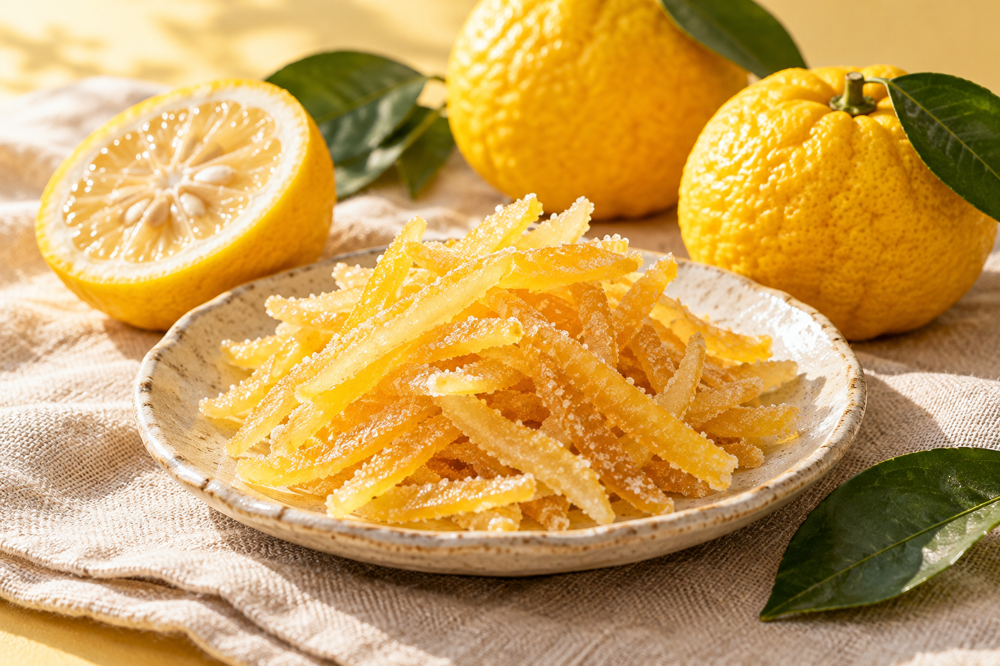

お茶と、のんびり。
緑茶や紅茶をいれて、ほっとひと息。ゆずの香りと過ごす、おやつの時間。
宮崎県日南市から、ほっとするおやつ。
ふわっと香る、ゆずのしあわせ。
甘さのあとに、ほろっと、ほろ苦く。
いつもの時間に、小さなごほうびを。
おやつにも。お茶のおともにも。

写真はデモ用のイメージですABOUT YUZU PEEL
日南市の特産品「日南ゆずピール」。
ゆずの皮を楽しむ、香り豊かなおやつです。
口に入れた瞬間に広がるさわやかな香りと、
甘さに寄り添う、心地よいほろ苦さ。
ひと息つきたい時間に、そっと彩りを添えます。
HOW TO ENJOY
そのままでも、ひと工夫でも。お気に入りの食べ方を。
緑茶や紅茶をいれて、ほっとひと息。ゆずの香りと過ごす、おやつの時間。
ヨーグルトに少し添えて。いつもの朝ごはんに、さわやかなアクセントを。
刻んでクッキーやパウンドケーキに。手づくりのおいしさに、ゆずの彩り。
OUR PRODUCTS
自分へのおやつに。大切な人への贈りものに。
気軽に楽しめる、いつものひと袋。
「ありがとう」に、ゆずの香りを添えて。
※ 価格・パッケージはデモ用です。内容量・原材料・アレルギー・送料・税込価格は販売開始時にご案内します。現在、ご注文・お支払いはできません。
YUZU CHAN'S MUSIC
YUZUちゃんの歌やミュージックビデオを
こちらでご紹介する予定です。
ゆずピールと一緒に、お楽しみに。
HELLO, NICHINAN
日南の魅力に出会う、次の一歩。
「愛シティ日南」のご案内はこちらから。
公式リンクは確認後に掲載予定です。